Tư vấn cá nhân 1–1
Một phiên riêng để bạn chia sẻ với chuyên gia theo nhu cầu và mức sẵn sàng của mình.
Giá tham khảo
400.000đ

Bắt đầu theo nhịp của mình, với giá rõ ràng và quyền lựa chọn thông tin muốn chia sẻ.
Sàng lọc miễn phí Xem dịch vụTư vấn cá nhân 50 phút, gói 6 buổi và những lựa chọn hỗ trợ theo nhu cầu.
Sàng lọc miễn phí Xem dịch vụTìm hiểu dịch vụ, xem gợi ý và chọn một khung giờ phù hợp với lịch của bạn.
Sàng lọc miễn phí Xem dịch vụ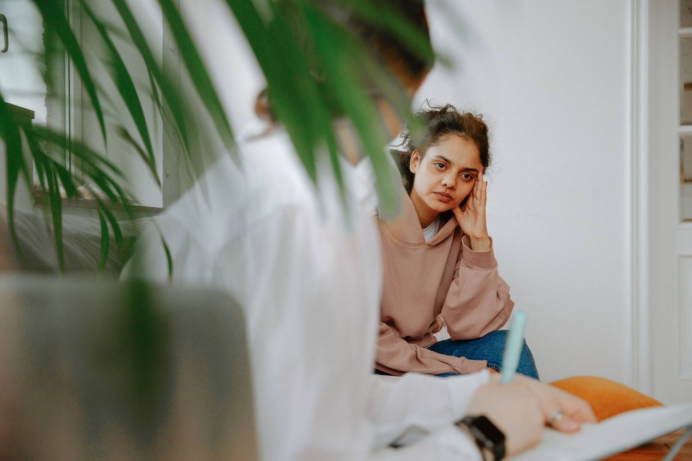
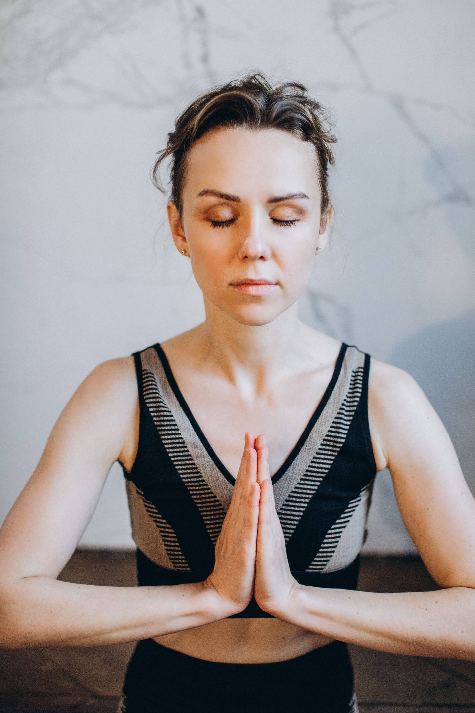

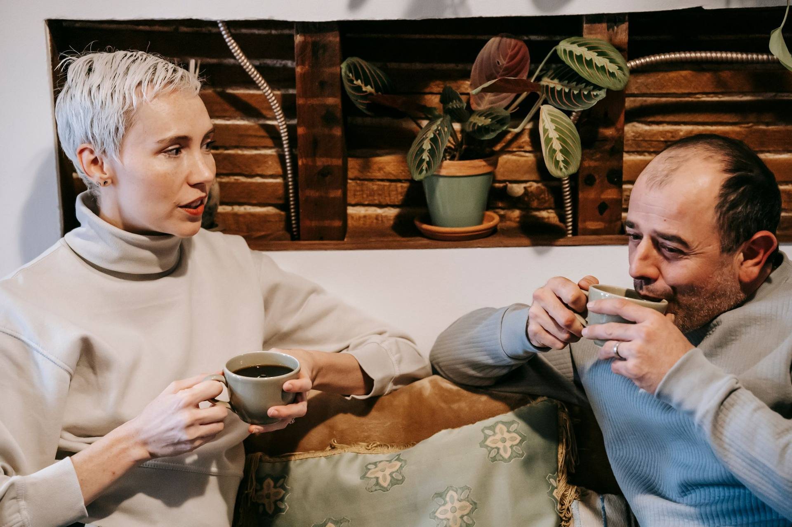
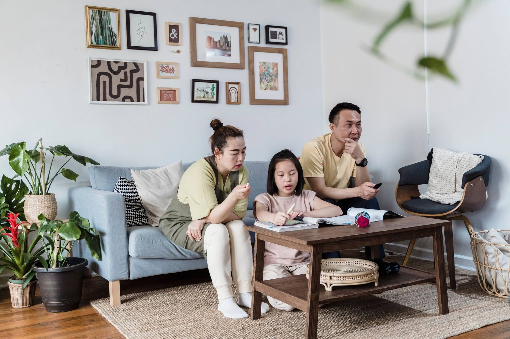
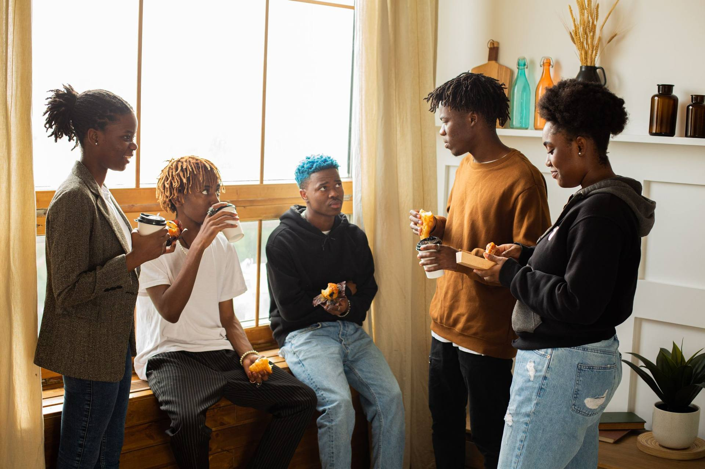


Một phiên riêng để bạn chia sẻ với chuyên gia theo nhu cầu và mức sẵn sàng của mình.
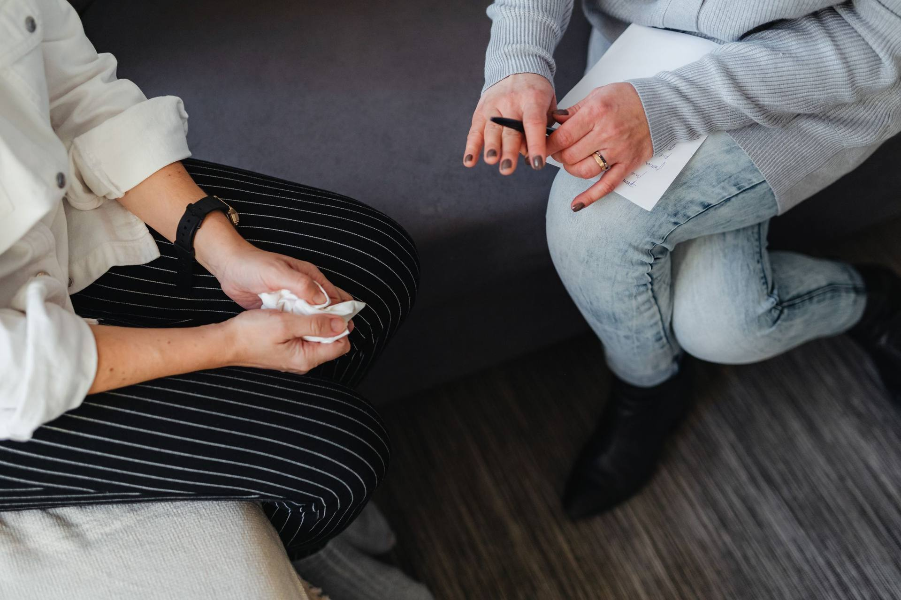
Một buổi đánh giá và năm buổi hỗ trợ theo kế hoạch thống nhất cùng chuyên gia.

Bảng hỏi tham khảo về hai tuần vừa qua và một câu hỏi an toàn trước khi ghép nối.
Ý tưởng phiên ngắn để tìm hiểu cách đồng hành trước khi chọn kế hoạch dài hơn.
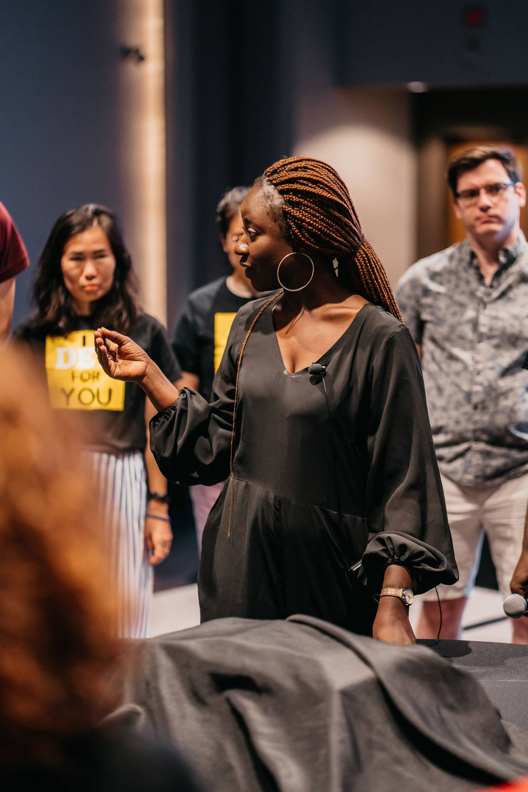
Nhóm hỗ trợ tự nguyện với một chuyên gia và tối đa sáu người tham gia.
Chương trình chia sẻ kiến thức và thảo luận theo nhu cầu của trường học.
Hạn mức phiên tư vấn, workshop và báo cáo tổng hợp cho đơn vị đối tác.
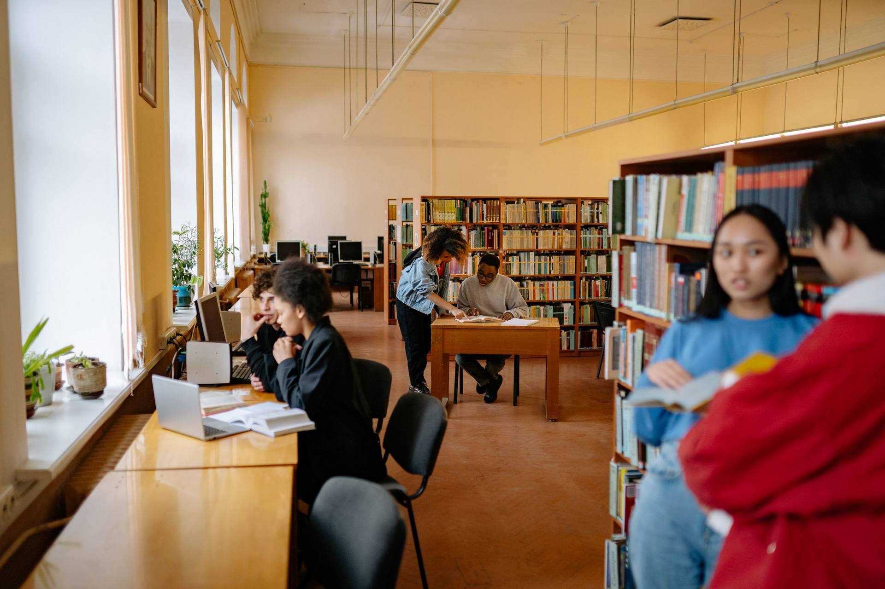
Tìm hiểu lựa chọn hỗ trợ chi phí và khung giờ phù hợp với lịch học.
Bạn có thể đến một phiên đầu với cảm giác chưa biết bắt đầu từ đâu. Không cần chuẩn bị một câu chuyện trọn vẹn hay tìm một lý do đủ lớn.
3 phút đọc · Kể NèPhiên cá nhân của Kể Nè được thiết kế với thời lượng 50 phút. Mục đích là có một khoảng riêng cho nhu cầu của bạn, thay vì cố giải quyết tất cả trong một lần.
3 phút đọc · Kể Nè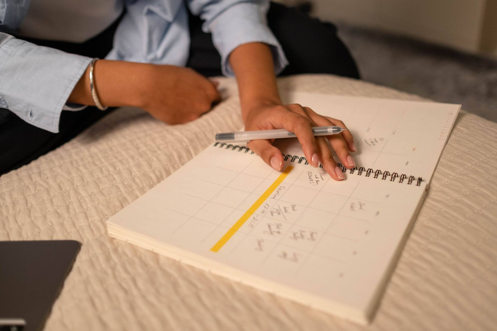
PHQ-9 và GAD-7 là những bảng hỏi về tần suất một số trải nghiệm trong hai tuần. Tổng điểm giúp gợi mở trao đổi, không tự xác định bạn mắc một bệnh.
3 phút đọc · Kể NèĐộ phù hợp không thể được mô tả chỉ bằng một số sao. Chủ đề chuyên môn, cách trao đổi, hình thức gặp và lịch trống đều có thể ảnh hưởng tới lựa chọn.
3 phút đọc · Kể NèChuẩn bị không có nghĩa là phải kể thật dài. Một ghi chú ngắn có thể giúp bạn nhớ điều muốn nói khi tới lượt mình.
3 phút đọc · Kể Nè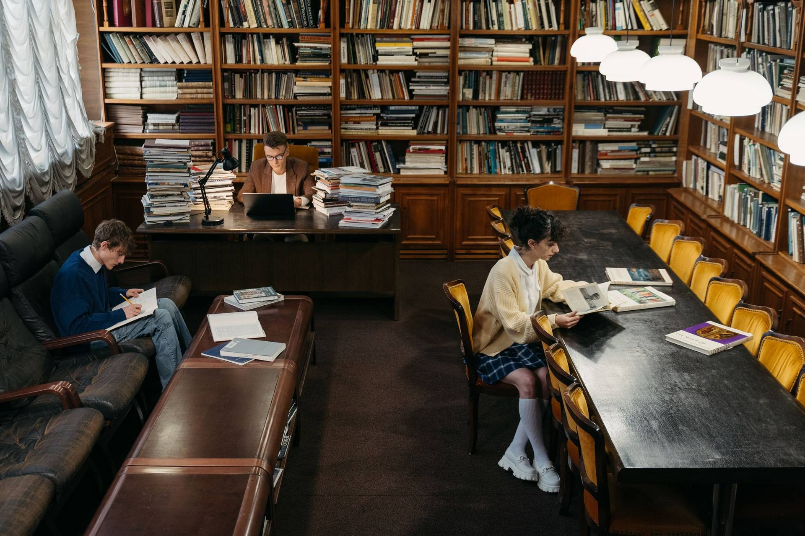
Lịch học, kỳ thi và kỳ vọng có thể cùng xuất hiện trong một tuần. Bạn không cần so sánh độ khó của mình với người khác mới được tìm người lắng nghe.
3 phút đọc · Kể NèRanh giới là những điều giúp người khác hiểu thời gian và khả năng đáp ứng của bạn. Chúng có thể thay đổi theo vai trò và thoả thuận công việc.
3 phút đọc · Kể NèMột bản ghi ngắn về giờ nghỉ, giờ dậy và những điều diễn ra trong ngày có thể giúp bạn nhớ lại bối cảnh khi trao đổi với chuyên môn.
3 phút đọc · Kể NèKể Nè tạo một khoảng riêng để bạn tìm hiểu nhu cầu, lựa chọn cách đồng hành và bắt đầu câu chuyện theo nhịp của mình.
Câu chuyện Kể NèThiết kế hành trình từ hiểu nhu cầu, ghép nối đến tư vấn và theo dõi.
Chất lượng và an toàn là trụ cột; sự tiện lợi là lớp bổ trợ.
Biệt danh, đồng thuận theo mục đích và quyền dừng khi chưa sẵn sàng.
Công khai giá, thời lượng, điều kiện và giới hạn dịch vụ.


Sàng lọc và trả lời câu hỏi an toàn; bạn chủ động đồng ý việc sử dụng dữ liệu.
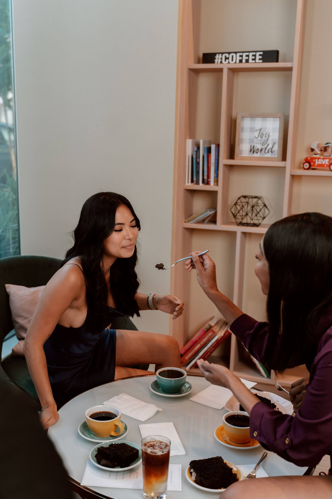
Xem gợi ý có lý do và đối chiếu khung giờ.
Dành 10 phút xem lại thời gian, mức giá và điều kiện của yêu cầu.
Tham gia phiên, phản hồi và chọn bước tiếp theo.
Mỗi bước đều ưu tiên sự rõ ràng, quyền riêng tư và lựa chọn của bạn. Khi cần hỗ trợ khẩn cấp, hãy tìm trợ giúp trực tiếp.
Nhìn lại điều khiến bạn bận lòng và điều bạn đang cần.
Tìm chủ đề, hình thức và nhịp trò chuyện phù hợp.
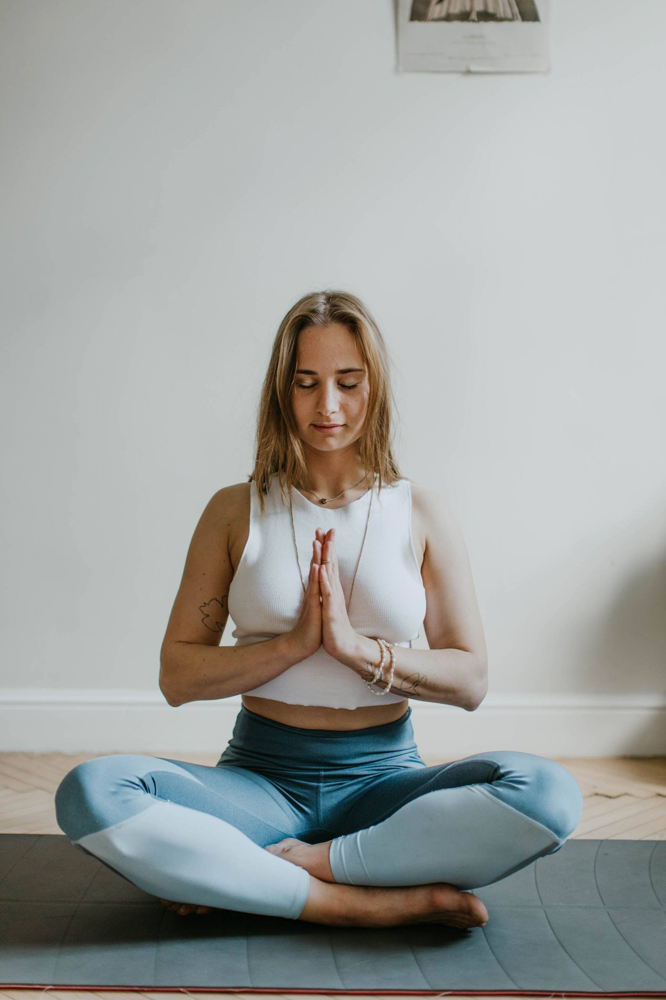
Ghi lại điều muốn nhớ và trao đổi về bước tiếp theo.
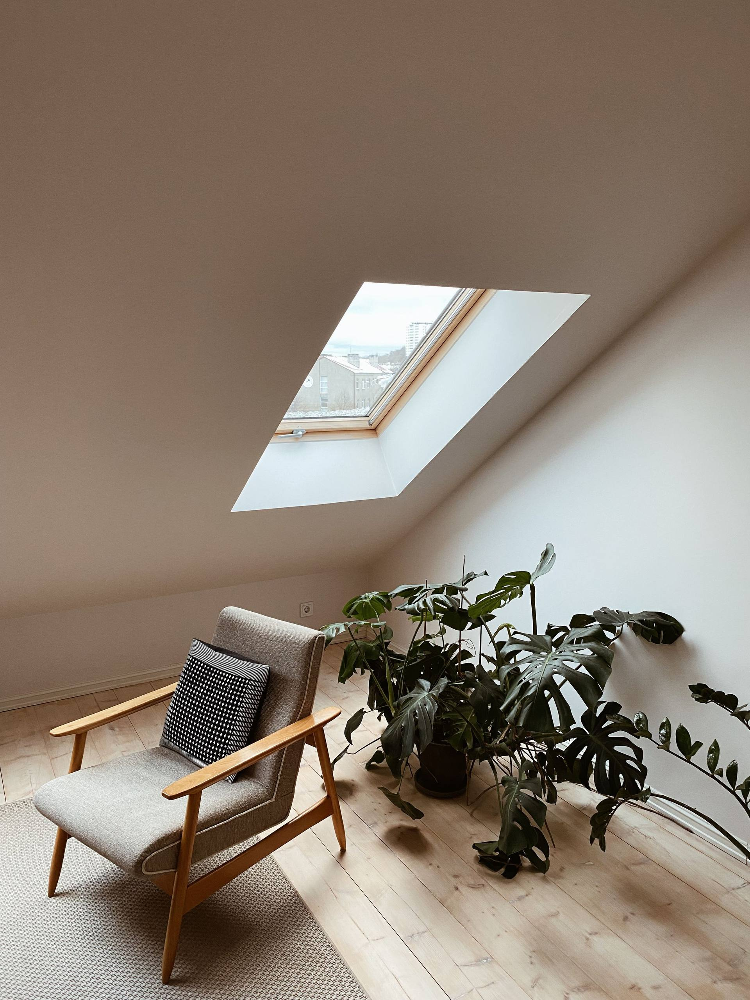
Tiếp tục, tạm dừng hoặc tìm cách hỗ trợ phù hợp hơn.
Mỗi người có một hành trình riêng. Bạn không cần đi qua tất cả các bước theo cùng một nhịp.
Tám góc nhìn về trải nghiệm, dịch vụ, vận hành và công nghệ cùng kết nối trong Kể Nè.
Tìm hiểu chuyên môn, cách đồng hành và điều kiện trước khi lựa chọn.
50 phút cho một phiên cá nhân, 10 phút để xem lại lựa chọn và quyền chủ động với thời gian của bạn.
Không tự gia hạn, không dùng điểm số để ép tiếp tục.
Không chẩn đoán, không kê thuốc, không thay thế cấp cứu.